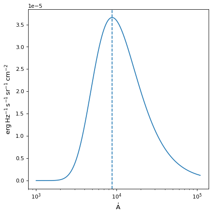

BlackBody¶
-
class
astropy.modeling.physical_models.BlackBody(*args, **kwargs)[source]¶ Bases:
astropy.modeling.Fittable1DModelBlackbody model using the Planck function.
- Parameters
- temperature
Quantity[:ref: ‘temperature’] Blackbody temperature.
- scale
floatorQuantity[:ref: ‘dimensionless’] Scale factor. If dimensionless, input units will assumed to be in Hz and output units in (erg / (cm ** 2 * s * Hz * sr). If not dimensionless, must be equivalent to either (erg / (cm ** 2 * s * Hz * sr) or erg / (cm ** 2 * s * AA * sr), in which case the result will be returned in the requested units and the scale will be stripped of units (with the float value applied).
- temperature
Notes
Model formula:
\[B_{\nu}(T) = A \frac{2 h \nu^{3} / c^{2}}{exp(h \nu / k T) - 1}\]Examples
>>> from astropy.modeling import models >>> from astropy import units as u >>> bb = models.BlackBody(temperature=5000*u.K) >>> bb(6000 * u.AA) <Quantity 1.53254685e-05 erg / (cm2 Hz s sr)>
import numpy as np import matplotlib.pyplot as plt from astropy.modeling.models import BlackBody from astropy import units as u from astropy.visualization import quantity_support bb = BlackBody(temperature=5778*u.K) wav = np.arange(1000, 110000) * u.AA flux = bb(wav) with quantity_support(): plt.figure() plt.semilogx(wav, flux) plt.axvline(bb.nu_max.to(u.AA, equivalencies=u.spectral()).value, ls='--') plt.show()
Attributes Summary
Bolometric flux.
This property is used to indicate what units or sets of units the evaluate method expects, and returns a dictionary mapping inputs to units (or
Noneif any units are accepted).Peak wavelength when the curve is expressed as power density.
Peak frequency when the curve is expressed as power density.
Names of the parameters that describe models of this type.
Methods Summary
evaluate(x, temperature, scale)Evaluate the model.
Attributes Documentation
-
bolometric_flux¶ Bolometric flux.
-
input_units¶
-
input_units_equivalencies= {'x': [(Unit("m"), Unit("Hz"), <function spectral.<locals>.<lambda>>), (Unit("m"), Unit("J"), <function spectral.<locals>.<lambda>>), (Unit("Hz"), Unit("J"), <function spectral.<locals>.<lambda>>, <function spectral.<locals>.<lambda>>), (Unit("m"), Unit("1 / m"), <function spectral.<locals>.<lambda>>), (Unit("Hz"), Unit("1 / m"), <function spectral.<locals>.<lambda>>, <function spectral.<locals>.<lambda>>), (Unit("J"), Unit("1 / m"), <function spectral.<locals>.<lambda>>, <function spectral.<locals>.<lambda>>), (Unit("1 / m"), Unit("rad / m"), <function spectral.<locals>.<lambda>>, <function spectral.<locals>.<lambda>>), (Unit("m"), Unit("rad / m"), <function spectral.<locals>.<lambda>>), (Unit("Hz"), Unit("rad / m"), <function spectral.<locals>.<lambda>>, <function spectral.<locals>.<lambda>>), (Unit("J"), Unit("rad / m"), <function spectral.<locals>.<lambda>>, <function spectral.<locals>.<lambda>>)]}¶
-
lambda_max¶ Peak wavelength when the curve is expressed as power density.
-
nu_max¶ Peak frequency when the curve is expressed as power density.
-
param_names= ('temperature', 'scale')¶ Names of the parameters that describe models of this type.
The parameters in this tuple are in the same order they should be passed in when initializing a model of a specific type. Some types of models, such as polynomial models, have a different number of parameters depending on some other property of the model, such as the degree.
When defining a custom model class the value of this attribute is automatically set by the
Parameterattributes defined in the class body.
-
scale= Parameter('scale', value=1.0, bounds=(0, None))¶
-
temperature= Parameter('temperature', value=5000.0, unit=K, bounds=(0, None))¶
Methods Documentation
-
evaluate(x, temperature, scale)[source]¶ Evaluate the model.
- Parameters
- x
float,ndarray, orQuantity[:ref: ‘frequency’] Frequency at which to compute the blackbody. If no units are given, this defaults to Hz (or AA if
scalewas initialized with units equivalent to erg / (cm ** 2 * s * AA * sr)).- temperature
float,ndarray, orQuantity Temperature of the blackbody. If no units are given, this defaults to Kelvin.
- scale
float,ndarray, orQuantity[:ref: ‘dimensionless’] Desired scale for the blackbody.
- x
- Returns
-
Note
Use
numpy.errstateto suppress Numpy warnings, if desired.Warning
Output values might contain
nanandinf. - Raises
ValueErrorInvalid temperature.
ZeroDivisionErrorWavelength is zero (when converting to frequency).
{kind=link}
{kind=link}